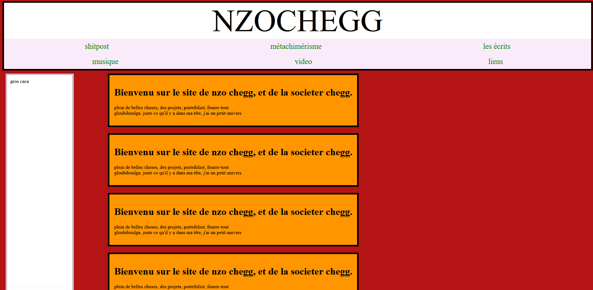

Ici c'est quand j'ai envie de parler et que je sais pas trop où le faire
donc je suis libre ici je fais ce que je veux yeahh!!! zizi prout merde!!!
zgeg et rezgeg vous allez faire quoi en fait je suis dingue putain
mille mixtape
Depuis le 22 novembre j'enregistre presque deux sons par jours en moyenne
J'suis dans un run de productivité d'experimentation pour vraiment trouver mon sons
mais la vérité c'est que j'm'en branle donc j'essaie de "finir" tout les sons que je fais
pour les sortir en plein de mixtape, j'ai 6 projets en même temps, avec des couleurs musicales différentes pour chaque, je fais des sons des fois en 30-40 minutes parce que je m'entraine à tenir un rythme de productivité, je veux pas rester sur mes acquis j'essaie plein de nouveau truc pour de vrai
j'essaie d'amener des sons inédits et des fois je fais n'importe quoi je tente et j'adore
ce côté casse gueule de la musique, j'aime les artistes en fin de carrières qui baise leur flux
comme j'ai pas de carrière raf, raf d'avoir personne qui écoute mais premier degré je pense avoir progressé, alors que j'ai tellement de chose qui occupe et me préoccupe dans la vie
en ce moment, la frustration de se dire que je pourrai facilement produire écrire et enregistré
au moins 5 sons par jours si je faisais ça non stop, sans compter que je fais ça seul
si j'avais un producteur avec moi ou un autre rappeur dans la même attitude ça serait encore plus légendaire je pense, bref, je rentre dans un run de mixtape je vais bombarder et
certainement essayer de + me faire des visuels, sortir mes premiers clips surement bientot
dans la même attitude de faire tout à la rache a la main en experimentant a fond en légende lezgo
3 décembre 2025 23h55
Epopée court métragique
En ce moment jkiff juste regarder des courts métrages et ça me fait réaliser encore plus
à quel point cest libre l'art putain et ça me rend fou de me rendre compte de truc comme ça
seulement maintenant. Je pense vraiment que Twitter m'a bousillé le cerveau et que maintenant
que je m'en éloigne je reprend petit a petit mes réflexe de rêveur que j'aime tant.
vers juillet 2025
Debut du site (janvier 2025)

Dinguerie cette couleur orange, cette inscription "gros caca", quel mystère... il suffisait d'aller le remplir, de le vivre;
de l'habiter et que sa forme s'adapte - plus qu'elle ne change - au fur et à mesure des épreuve de ma patience.
Les champs magnétiques, Philippe Soupault, André Breton
commencé en 2024.
Mes poèmes automatiques (metachim1) évidemment inspiré du surréalisme tire aussi leur titre "javel" d'un moment de cette oeuvre.
"L'eau de javel et les lignes de nos mains, dirigeront le monde."
Caravansérail, Francis Picabia
lu en septembre 2025. je suis tellement ce poète qui court, médiocre, derrière cet idéal malin.
Grimoire Journal d'une alchimie du moi, Raoul Vaneigem
"9. Ce que j'écris n'est pas l'oeuvre d'une vie, c'est une vie à l'oeuvre. Merci de considérer ces fragments dans leur désordre et leurs contradictions comme de simples variations dans le jeu de l'être et du devoir-être. C'est à chacun désormais de jouer."
il est 23h59 le 1er juin 2026 et je commence à lire ce livre qui a l'air tout à fait agréable.
"29ter. Ce que nous sommes en voie d'opérer est une approche poétique de la civilisation dont nous pressentons la naissance."
Lettrisme, l'ultime avant-garde, Bernard Girard
isou... dis moi... comment...
lu en mars 2026.
Qu'est-ce que le lettrisme? Isidore Isou
lu en juin 2025.
Lettrisme: le boulversement des arts, Guillaume Robin